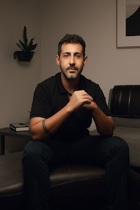

Acompanhamento clínico especializado em Psicanálise Contemporânea, Sexologia e tratamento da Ansiedade. Um espaço seguro de escuta ética e livre de julgamentos.

DR. ALEX SILVEIRA
Psicólogo | Psicanalista | Sexólogo"A base da escolha da minha profissão está no meu gosto por ajudar as pessoas. Ao longo dos últimos anos, dediquei-me a uma rigorosa preparação teórica e prática para oferecer acompanhamento especializado em Psicanálise e Sexologia, com ênfase no tratamento da Ansiedade e suas comorbidades."
Graduado em 2010 pela Universidade de Franca (UNIFRAN), construiu uma trajetória sólida no serviço público de saúde mental no CAPS II e, atualmente, dedica-se exclusivamente ao atendimento clínico presencial e online.
Psicologia pela Universidade de Franca (UNIFRAN - 2010)
Pós-Graduação Latu Sensu (UNIARA)
Pós-Graduação Latu Sensu (UNIFRAN)
Aprimoramento Clínico (FORP-USP)
Abordagens fundamentadas na Psicanálise e Sexologia para o seu bem-estar emocional e de relacionamento.
Investigação das causas profundas da dor emocional, angústias, traumas e padrões repetitivos, proporcionando autoconhecimento e ressignificação subjetiva.
Acompanhamento ético para disfunções sexuais, bloqueios emocionais, desejo, identidade, autoestima e conflitos na vida íntima individual ou de casal.
Tratamento especializado para transtornos de ansiedade, crises de pânico, estresse crônico, fobias, estafa mental e depressão associada.
Compreensão integrativa (FORP-USP) das manifestações físicas do estresse psíquico, bruxismo, DTM e tensões emocionais somatizadas no corpo.
Escolha o formato que melhor se adapta à sua rotina e necessidades com total privacidade.
Atendimento acolhedor e seguro no Centro de São Sebastião do Paraíso - MG.
Atendimento psicológico de onde você estiver, para todo o Brasil e exterior.
R. Djalma Dutra, 568 - Centro
São Sebastião do Paraíso - MG, 37950-050
(35) 98449-6410
Tire suas principais dúvidas sobre o processo terapêutico.
A primeira sessão é um momento de acolhimento e escuta inicial. O Dr. Alex compreenderá suas queixas, histórico e expectativas em um espaço livre de julgamentos, definindo juntos o plano terapêutico mais adequado.
A sexologia cuida de questões como falta ou excesso de desejo, ansiedade de desempenho, disfunção erétil, dor durante a relação, anorgasmia, questões de identidade, autoestima e desentendimentos de casal.
Sim. O atendimento online possui respaldo ético do Conselho Federal de Psicologia (CFP). Ele garante absoluto sigilo, praticidade e conforto para pacientes de qualquer lugar do Brasil ou do mundo.
As sessões têm duração média de 50 minutos e acontecem semanalmente ou quinzenalmente, de acordo com o contrato analítico estabelecido na primeira consulta.